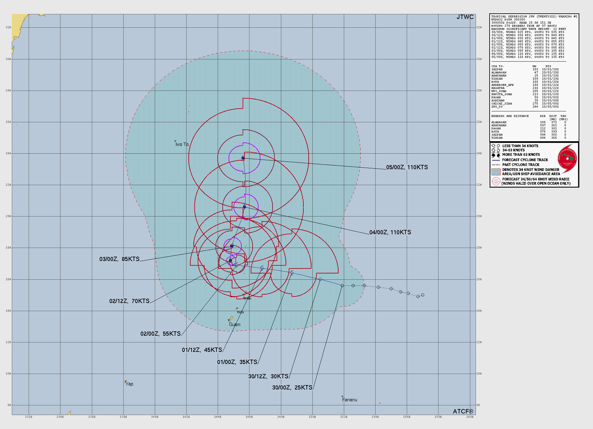
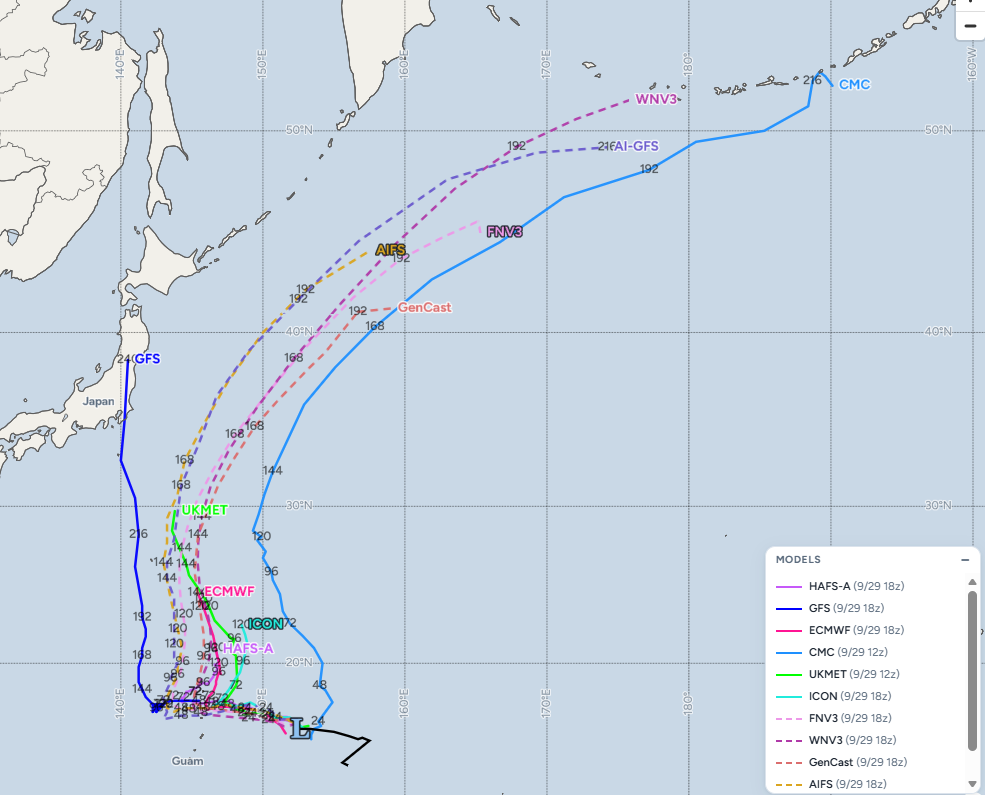

괌 북동쪽 해상에서 새로운 태풍 후보(열대저기압)이 발생중, 한국기상청 일기도 기준으로는 55호 열대저압부(아직 공식 통보문은 안나옴)

아직 태풍은 아니고 열대저기압(TD)단계, 일단 미국 JTWC의 예상 경로도가 먼저 올라옴(개인적으로는 48시간 범위에서 태풍 발생 가능성이 높아보임)

일본 남쪽으로 통과중인 26호 태풍 수리개가 변수이긴 한데 어차피 우리나라로는 안올거고, 태풍 발생 시점 무렵의 수리개 이동속도와 위치에 따라 기압계 경계선이 달라질 것으로 보임
현 시점 전체적인 예상 경로는 일본에 가까워질지 아니면 아예 사람 없는 곳으로 갈지 정도의 차고, 단기 예측 기준으로는 괌과 사이판 해안선에 너울성 파도와 강풍 정도가 예상됨
초이완 vs 전구경직 ㄷㄷㄷ